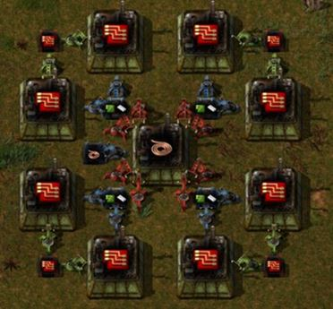

There are a few things that were not covered in the earlier parts of this guide because it didn't seem to fit or require an entire section. I will cover those topics here. Things like Solar and Accumulator layouts and information will be covered here as well as other builds and setups for things like Advanced Circuits, etc.
Solar Panels are the clean energy of Factorio since they do not create pollution and will provide you with essentially free energy during the day. However, since they don't work at night this is where the Accumulators come in because they act as a battery bank and store energy which can be used during the night or for other things like when there are huge power demands (lasers all firing at once, etc).
Thee are many popular layouts for both the Solar Panels and Accumulators that look nice and have the correct ratio of panels to Accumulators. What do I mean by correct ratios? There are a certain amount of Solar Panels needed to fill a certain amount of Accumulators without much waste. This is all assuming you don't have Steam Power as well, but either way it is good to stay close to the correct amount of each otherwise you're either wasting some energy or not generating enough to fully charge your Accumulators.
If you would like to follow this ratio, then based on multiple sources the correct ratio is 25:21 Solar Panels to Accumulators. In essence that means .84 Accumulators per Solar Panel, which if you want a bigger layout could be 84 Accumulators to 100 panels. If you want to design your own layouts feel free, but if you want some that are proven to work and look nice here are some of those:
If you want to see the math behind the ratio and some of the places these layouts were posted you can check out these links:
Thread with tons of different designs. Some may be outdated though.
Reddit thread with a really nice looking layout.
Of course you can put your Solar Panels and Accumulators in totally different places and not together in a single layout. It is entirely your choice.
Just as with Solar Panels/Accumulators, there is an ideal ratio of things when building Electronic Circuits. This involves the amount of Copper Wire Machines compared to the number of actual Circuit Machines. The best setup and ratio for this is 3 Copper Wire machines to 2 Circuit Machines. Now if you wanted, you could have the Copper Wire put onto a belt and brought to the CircuitMachines but it is the general consensus that having Copper Wires on belts is a bad idea because you just can't get enough throughput that way for the amount of wires needed in most things. So for the build I will show below it will be using the direct insertion method so we can take advantage of the Inserter Stack Size bonus.
You will notice the ideal ratio is used since we have 3 Wire machines inserting into 2 Circuit machines. To get maximum throughput and speed it is best to use multiple Fast Inserters like you see the in the picture. There are a few variations of this build that are each a little different but I would say this is the most common one. As always, don't feel like you have to use this, it is just here for an example and to use if you so desire.
There are actually many different ways to set up the production of Advanced Circuits. The only ratios we really need to worry about here are the amount of Copper Wire Machines to Advanced Circuit Machines. You can support 8 Advanced Circuit machines with just 1 Copper Wire Machine because the Wires are created so quickly and the Red Circuits take a lot longer to make. Below are multiple builds that all work a bit differently but produce pretty much the same result in the end.